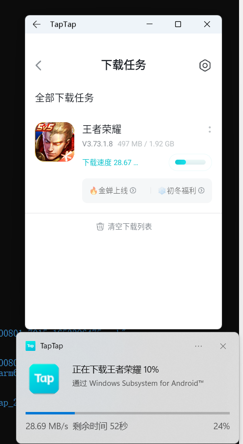

Window Subsystem Android Review
文章目录
周末看到TG Android Dev群里有人在讨论Windows Subsystem Android（WSA），觉得有点意思。于是周末花了数个小时，把笔记本安装上Windows 11，然后又手动安装上了WSA。
这篇文章试图对这项新技术做一个review。
WSA环境安装
Windows 11安装
我的笔记本是联想Y7000P。本来想着从windows 10升级上去，结果发现必须启用UEFI。但启用UEFI的话，我目前的非Secure Boot的系统就要重新刷。最终我尝试成功的路径是：UEFI安装Windows 10 –> Windows 10升级Windows 11.
UEFI安装Windows 10
参考这个视频：windows10安装，uefi模式设置
步骤基本是一样的，只是我用的PE系统是：优启通
Windows 10升级Windows 11 Insider
UEFI的Win 10安装成功后，就具备了更新到Win 11的基础条件。网上的教程都在讲通过系统更新升级到Windows 11。这个方法对部分比较新的电脑可能有效，比如我另外一台Surface Pro 7就是这样升级成功的，但这台死Y7000P却升级不成功。
试了几个方法后，最后只有这个成功了：建议运行Windows 11安装助手
按照帖子中Pondsi的回复操作即可。
WSA安装
系统安装成功后，按照微软官方给的文档，实际上并不能成功安装WSA，在Microsoft Store中搜索Amazon Store是没有结果的，因为这个应用目前只有在美国区域开放。
最后找到一个靠谱的手动安装文章：Install WSA (Windows Subsystem for Android) and Android Apps In Windows 11 W/O Amazon Appstore
按照这个文章操作一遍，终于把WSA环境装上了。
不过这个文章里有几个点需要注意：
- 下载msixbundle这一步，我用chrome下载一直失败，最后换了Edge，然后要忽略安全性问题后就可以下载成功
- Add-AppxPackage -Path 这一步需要先安装一下Microsoft.UI.Xaml再安装MicrosoftCorporationII.WindowsSubsystemForAndroid
- Developer mode这一步打开后，还需要手动点一下“管理开发人员设置”，这时WSA才会启动。启动成功后才会有IP地址，用于后续通过adb安装apk。
- 需要确保BIOS中的Intel Virtualization（硬件虚拟化）已经开启。
测试
我手动安装微信和抖音。简单测试了下都可以用：
GPU渲染选择独立显卡也没有问题
资源开销
开销不算低。笔记本风扇呼呼的吹（也不排除笔记本好久没有清灰了散热能力下降）。
通知栏效果：

下载–安装（多应用协作）也可以正常工作。
游戏测试，王者荣耀可以运行：
Review
这篇是embarcadero对微软的Scott Hanselman的采访：Android on Windows 11: A Developer’s Perspective
里面谈论了很多技术细节。值得看一下。
我在这里记录一下我关注到的点：
- 和WSL类似。我看github上已经放出了WSA Linux Kernel，用来记录微软的提交记录。
- arm64的apk之所以可以在我Intel i5的笔记本上能跑起来是因为使用了interoperability layer。在Intel CPU上用的是libhoudini.so。
- arm64的apk在Arm64的Windows上跑的话，是native执行的
-
依赖于Virtual Machine Platform（Intel），在BIOS中开启
-
APK目前通过Amazon Appstore分发，目前仅开了US市场
-
微软为WSA VM定义了生命周期。来应对app的各种情况：是否运行、切换动画、应用释放等等。生命周期目前看起来比较简单。
-
官方给出了性能测试数据，单论性能还是可以的啊，无论从CPU/MEM，貌似现在还不支持3D？
-
目前的WSA使用的是Android 11
-
适配WSA的主要工作是：Android App Resizable
-
位置服务可用，依赖于Windows位置设置
-
通知会显示在桌面上，并且可以唤醒WSA
文章作者 teoking
上次更新 2022-05-30